Sebuah organisasi muda yang siap untuk membangkitkan kesejahteraan masyarakat indonesia dengan menyatukan kepedulian bersama dan menuangkannya kepada yang membutuhkan.
" Mewujudkan kesejahteraan bagi masyarakat Indonesia yang merupakan cita-cita luhur kemerdekaan. Menjadikan semua merasakan sila kedua, yaitu kemanusiaan yang adil dan beradab bersama. "
“ menyumbangkan kepedulian kita berupa, pakaian layak pakai, sembako, dan juga dana untuk membeli air besih bagi mereka yang membutuhkan dan kebutuhan lainnya.”
 



 
